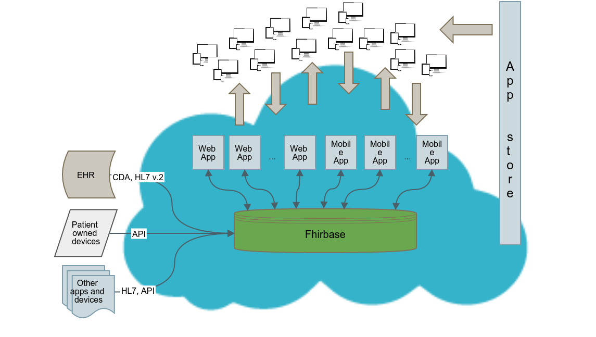

Pavel Smirnov
PM with Health Samurai
PM with Health Samurai
(818)731-1279
Health Samurai
looking for simplicity in a complex domain
Our Core Values
- we value professionalism and education
- we like open source
- we are fanatics of quality and standards
- we constantly improving our processes and technologies to solve more and more complex problems
What we've done
- MedClient - cloud based Electronic Health Record system for Choice Hospital Systems
- fhirbase - is an open source stack for Health IT application development based on FHIR standard
- formstamp - open source widget set for AngularJs applications
- foodtaster - open source library for test driven devops (Chef & Vagrant)
Our Technical Stack
- Linux (operating system)
- PostgreSQL (open source database)
- Ruby & Ruby On Rails - efficient web development stack
- AngularJs - google open source MVVM framework for interactive front-end applications
- Other front-end libraries: twitter bootstrap, D3, bower, node, npm, less, coffeescript etc
- Clojure, a perfect pragmatic choice between quick development, enterprise java infrastructure and formal academic power
- Chef, Vagrant & Sensu (for infrastructure as a code)
- Amazon AWS, a source of compute and storage power
Development methodologies
- Agile development methods: backlog, scrum (meetings), pair programming, user stories etc
- Continuous Delivery
- Test Driven Development & Continuous Integration
- DevOps (Infrastructure as a code)
- Rapid prototyping
- Lean Customer Development
Development Tools
- Github - source control
- Teamcity - continuous integration (deployment) server
- Redmine - issue tracker
- Selenium - web browser automated testing
- New Relic - web traffic performance monitoring
- Chef - infrastructure management
- Sensu - monitoring
- Balsamic, mind mapping and other tools for customer development, ux testing etc
Security Measures
- AWS hosting is HIPAA compliant
- No protected health information (PHI) stored on local devices
- Data-at-Rest is encrypted, SSL encryption of Data-in-Transit
- Biometric authentication of users when applicable
- Comprehensive audit log and monitoring tools
- We are educating our users. Security measures built into a product have to be supplemented by an organization culture and policies.
The problem we address
Current EHRs are huge monolithic systems with lack of customization and interopeability
Our offer

Fast
Healthcare
Interoperability
Resources
... is the next generation international standard
for exchanging healthcare information electronically
Why FHIR?
- Utilizes best practises and targets implementers and web technolgies
- Supports common scenarios but provides with documented extensibility
- Freely available (CC0 license)
- Great growing community
FHIRbase
... is an open source stack for
Health IT application development based on FHIR standard
fhirbase components

fhirbase storage
- stores resources relationally and provides with the power of SQL for querying & aggregating
- provides with a set of procedures & views to persist and retrieve resources as json documents
fhirbase roadmap